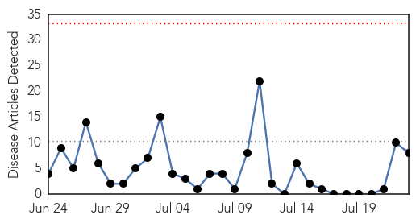
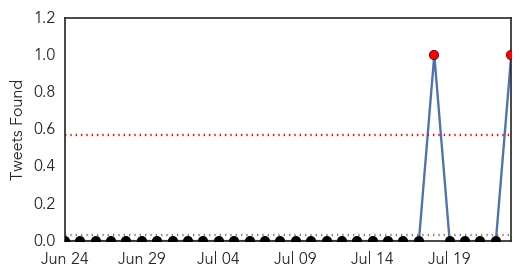
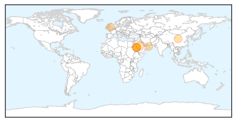
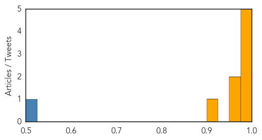

Hemmorhagic Fever
30-Day Web Trend
4 alerts, 0 warnings

30-Day Twitter Trend
0 alerts, 0 warnings

Article Locations

Article Confidences

Top Articles:
-
No articles found for Jul 23, 2014
Top Tweets:
-
No tweets found for Jul 23, 2014
MERS
30-Day Web Trend
0 alerts, 0 warnings

30-Day Twitter Trend
2 alerts, 0 warnings

Article Locations
Article Confidences
Top Articles:
- 0.996
- Mers virus detected in camel barn air samples
- 0.996
- MERS virus 'may be airborne', scientists warn
- 0.992
- MERS virus may spread in air
- 0.988
- Mers coronavirus is still posing myriad of unanswered questions for scientists
- 0.983
- Deadly MERS virus might be airborne
- 0.970
- Mers survey would be of great value
- 0.965
- Coronavirus found in air sample near Jeddah camel barn
- 0.922
- Mers mystery at the camel farm
Top Tweets:
- 0.524
- RT: Iran notified WHO of a further lab-confirmed case of infection w/ Middle East respiratory syndrome coronavirus MERS http://t.co/8…